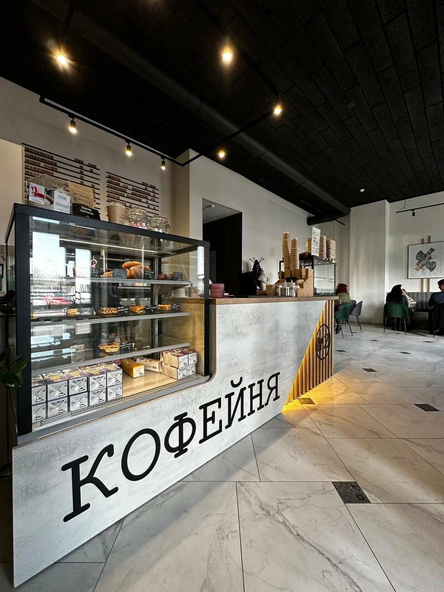
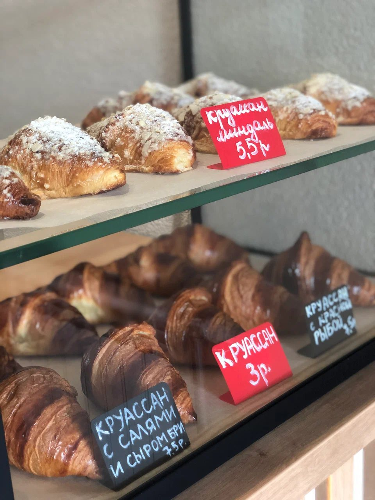
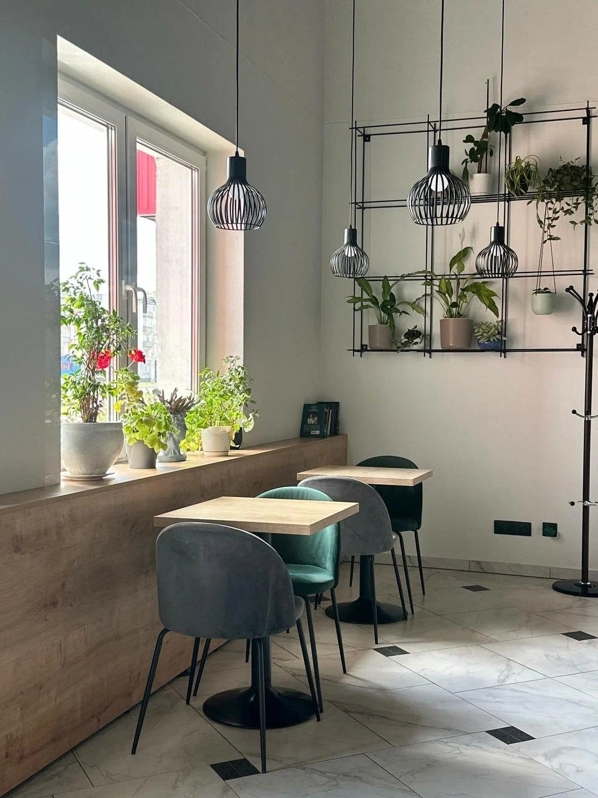

Хороший кофе на Прилукской
Небольшая кофейня рядом с метро Михалово: кофе, свежие круассаны, десерты и спокойная атмосфера. Посидеть или взять с собой.
4,9600 оценок
на Яндекс Картах
на Яндекс Картах



Чем хвалят гости
98%положительных об атмосфере
95%о персонале
94%о кофе
100%об интерьере
Что удобно знать
Всё, о чём обычно спрашивают перед визитом.
Кофе и еда с собой
Wi-Fi
Оплата картой
Летняя веранда
Можно с собакой
Пандус и доступный вход
Подарочный сертификат
Сезонное меню
Заходите на кофе
Прилукская, 60, рядом с метро Михалово. Кофе и выпечку можно взять с собой.